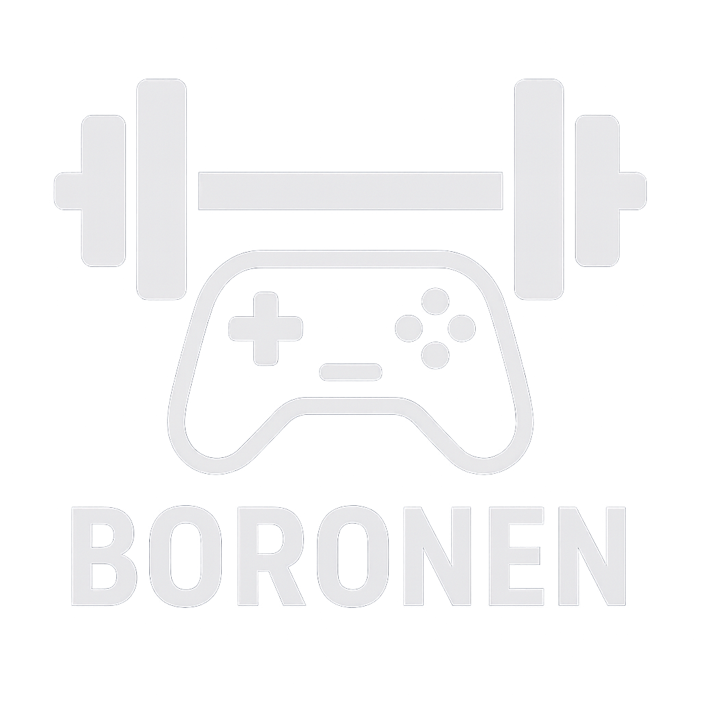

RPS Online
An online rock-paper-scissors game focused on clear game logic and readable code structure.
Category: Programming
Technologies: Python, GitHub
GitHub: github.com/Boronen/RPS_Online

Kovács KevinOn this page I present my most important programming, file architecting and game development projects. They include school assignments, personal experiments and long-term game ideas.
An online rock-paper-scissors game focused on clear game logic and readable code structure.
Category: Programming
Technologies: Python, GitHub
GitHub: github.com/Boronen/RPS_Online

An experimental game project where I focused on gameplay feel and logical systems design.
Category: Programming
GitHub: github.com/Boronen/golok

A story-driven Python game where choices and state management play an important role.
Category: Programming
Technologies: Python, text adventure mechanics
GitHub: GitHub – alpha release

In this project I analyzed and modified the file structure of an existing game to inject my own concept art and content.
Short description: I used HxD to inspect files on the hex level, Resource Hacker to manipulate resources, and JPEXS to explore embedded graphical assets. The goal was to understand how a game is built “under the hood” and how this can be used creatively.
Tools used: HxD editor, Resource Hacker, JPEXS
Project PP is a point and click adventure game starring Feri, a resident of the small Hungarian village Nagyhuta. His big dream is to escape local poverty, leave behind the isolated village life and start over in the big city as a politician.
The problem is that almost everything is working against him: there is no bus, no train, no money and barely any job opportunities. The player follows Feri on this absurd, sometimes bittersweet journey where every small decision matters.
The atmosphere mixes the vibe of a Hungarian village with real social issues, dark humour and satire. Storytelling, character motivation and the fragile hope of “breaking out” are at the heart of the project.


You can find the source code and any downloadable builds on the GitHub pages of each project. If needed, I can also prepare separate ZIP builds for demonstration.